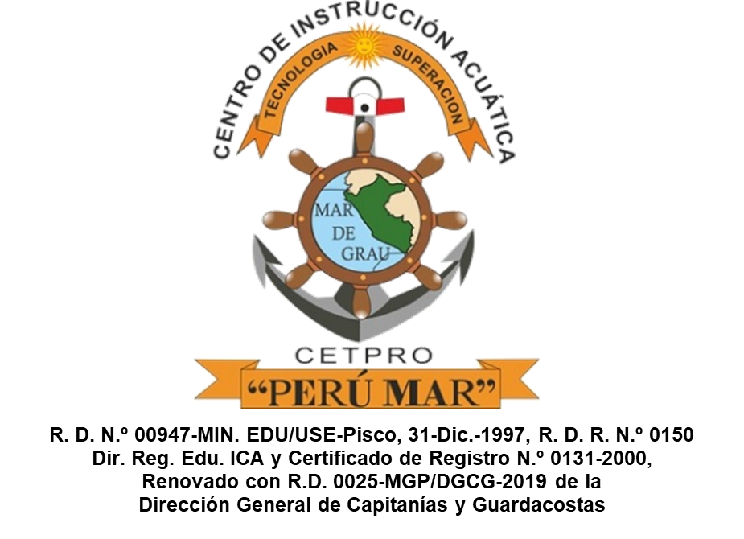

Propuesta pendiente de revisión humana. No integrada en la aplicación.
Comparación directa con el escudo institucional
Revisar el tamaño del remate superior, el espacio alrededor del Perú y la separación entre mar, costa y territorio.

Escudo original · referencia
Nuevo · 160 px
Nuevo · 80 px
Nuevo · 40 px
Nuevo · 24 px
T: centrada, más alargada horizontalmente: ancho al 88 % y altura al 64 % del diseño inicial. La pieza se eleva 8 unidades para dejar más aire respecto al timón. Sobre ella aparece la media argolla del ancla, dibujada detrás de la T. Los laterales rojo/blanco/rojo siguen siendo un remate estrecho, no una bandera rectangular. Perú: altura de 63 unidades sobre 79 útiles del medallón (≈80 %), con escala geográfica uniforme. El norte y el sureste se aproximan al borde sin tocarlo, siguiendo la referencia original. Costa: trazo claro de aproximadamente 2 unidades solo en el litoral occidental, sin halo en el resto del país.
Claro
160 px
80 px
40 px
24 px
Oscuro
160 px
80 px
40 px
24 px
Monocromo
160 px
80 px
40 px
24 px
Alcance, geografía y edición
Solo se ajustaron la escala de la T y el grupo Perú + Mar de Grau en los dos SVG. Ancla, timón, paleta, texto y disposición general permanecen intactos. El mapa conserva la geometría y orientación norte arriba de Natural Earth, con escala uniforme. Datos de dominio público.
El mar es una franja occidental que sigue la costa, no un círculo azul ni una masa independiente. Termina antes del extremo sur: norte, este y sureste quedan neutros. El Perú no tiene stroke perimetral; la separación clara es un path exclusivo de la costa occidental. No se dibujan países vecinos.
La imagen de referencia es una copia sin modificaciones del escudo institucional existente; no se generó ni editó una imagen raster. Los nuevos isotipos siguen siendo vectoriales. Los colores se adaptan mediante --pm-ink, --pm-wheel, --pm-paper, --pm-sea y --pm-red. Los textos del lockup siguen editables. Al repetir SVG inline, prefijar IDs; para uso decorativo futuro ajustar aria-hidden y el nombre accesible del contenedor.
La comparación de 40 px prioriza reconocimiento y equilibrio; a 24 px se acepta pérdida cartográfica. No se afirma aprobación ni comprobación visual humana. Sin integración, TEST-H2-019, Gate 2, acceptance, merge ni H3.